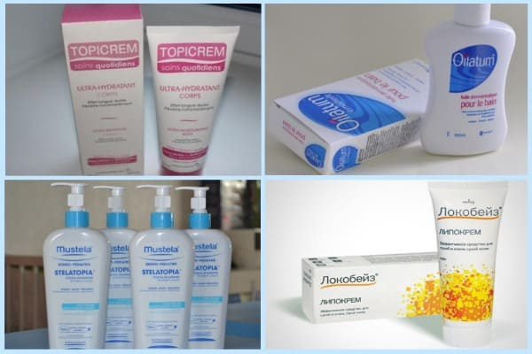
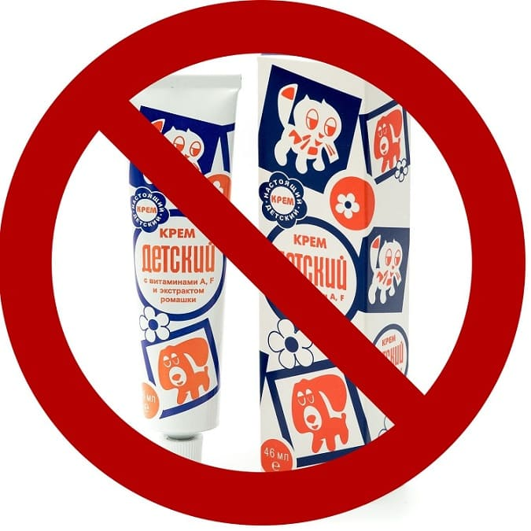
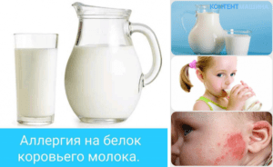
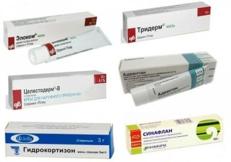
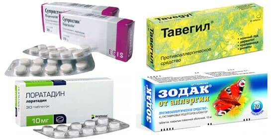
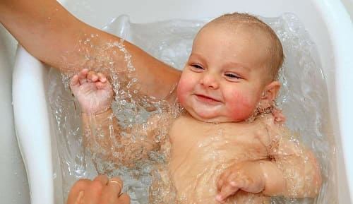
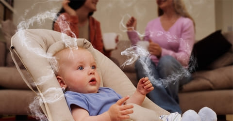
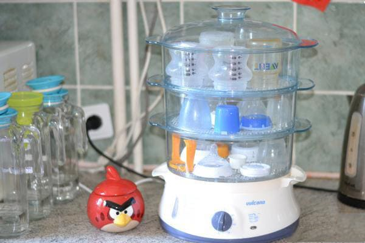

2) склонность иммунной системы к аллергическому иммунному ответу (атопии).
Основная информация по лечению атопического дерматита:
а) Постоянно, много месяцев, пока не наступит стойкая ремиссия, используем эмоленты (они же лубриканты, они же увлажняющие кремы/ мази/эмульсии) от 2 раз в день до хоть каждые два часа, в зависимости от тяжести. Особенно важно после купания малыша. Это – основа лечения АтД.

Топ моих назначений препаратов из этой группы (на полноту и объективность не претендую, конфликта интересов не имею): Локобейз Рипеа, Mustela Stelatopia, Эмолиум специальный крем, Липикар АР+, Липобейз, Цикапласт.
Эмоленты не следует экономить, тюбик крема на 250 мл должен уходить за 1–2 недели, в зависимости от тяжести и площади поражений.
Эмоленты подбираются индивидуально, методом проб и ошибок. Некоторые, даже более дорогие не подходят конкретному ребенку (неэффективны), а некоторые даже ухудшают состояние кожи. Поэтому не покупайте эмоленты в больших упаковках, будет обидно, если не подойдет. В идеале наберите пробников и поэкспериментируйте, выберите тот, что дает наилучший увлажняющий эффект.
NB!
Детский крем – это НЕ эмолент! Вообще, от слова «совсем».

б) Не более трети случаев АтД связаны с пищевой аллергией, поэтому вопрос об элиминационной (исключающей некоторые продукты) диете для ребенка является очень спорным, а диета кормящей грудью маме нужна совсем редко (только при четкой связи продуктов питания с высыпаниями).
в) Иногда АтД сочетается с прожилками крови в стуле, такое сочетание почти всегда говорит о наличии аллергии к белкам коровьего молока (и вот тут элиминационная диета бывает вполне оправданной).

г) Смеси на козьем молоке (Нэнни, Кабрита и др.) не являются способом лечения АтД. Если у ребенка непереносимость коровьего молока, у него почти наверняка есть и непереносимость козьего, их белковый состав почти идентичен.
Смеси с частичным гидролизом белка (Нутрилон Комфорт, Нан ГА и т. д.) – не лечение АтД, а профилактика пищевой аллергии; используются до старта симптомов, если есть предпосылки (прежде всего отягощенный семейный анамнез).
Смеси на соевом белке (Фрисосой, Симилак Изомил и т. д.) использовать при АтД нужно с осторожностью, поскольку соя сама по себе является сильным аллергеном. Но иногда соевая смесь при АтД приносит клиническое облегчение.
Смеси с полным гидролизом белка (Нутрилон Пепти Аллергия, Фрисопеп АС и др.) показаны только той части детей, у которых АтД связан с пищевой аллергией. Это определяется индивидуально: по крови в стуле, по эозинофилии в анализе крови, по уровню общего IgE и, главное, по положительному клиническому ответу на эти смеси.
Смеси аминокислотные (Неокейт, Альфаре Амино и т. д.) используются, когда есть тяжелая пищевая аллергия, при недостаточном клиническом ответе на полногидролизные смеси.
д) Местные (топические) глюкокортикостероидные кремы, или, в просторечии, «гормональные кремы», показаны только при выраженном обострении, только коротким курсом, только после обсуждения с врачом правил их применения. Иногда оправданно применение этих препаратов в виде так называемой «проактивной» терапии, когда стероидные кремы наносятся 2 раза в неделю, длительное время, чтобы сдерживать непрерывные обострения АтД.

е) Топические ингибиторы кальциневрина (пимекролимус и такролимус) по эффекту и показаниям похожи на топические стероиды, но не содержат гормонов (это важно многим боязливым родителям) и являются второй линией терапии в случаях, когда стероиды не подошли. Подходят не всем детям: и потому, что часто вызывают жжение и дискомфорт в коже, и потому, что они слабее стероидных препаратов. Но эти препараты имеют и некоторые преимущества над топическими стероидами, например они не вызывают атрофию кожи и стероид-индуцированную розацеа, поэтому их можно использовать длительное время, в том числе на лице (в отличие от стероидных препаратов). Применение этих препаратов в виде проактивной терапии также возможно.
ж) Антигистаминные препараты первого (Супрастин, Фенистил и др.) и второго (Зиртек, Кларитин и др.) поколения НЕ лечат АтД, они только снижают зуд. Полезны только на пике зуда для облегчения самочувствия.

з) Анализы на общий IgE, специфические IgE, эозинофильный катионный белок, Фадиатоп Иммунокап, скарификационные кожные пробы, прик-тесты и прочее аллергологическое обследование имеет высокую стоимость и показано далеко не всем пациентам, а тем, кому все же показано, нередко ничем не помогает в тактике лечения.
Поэтому до прямой рекомендации вашего врача сдавать эти анализы не нужно.
и) Прививки ребенку с АтД показаны еще больше, чем здоровому.
Потому что если он заболеет, например коклюшем, то риск аллергических реакций и обострений АтД от болезни и лекарств у него на порядок выше, чем риск обострений и аллергических реакций на прививку от коклюша. Поэтому тут из двух зол выбираем меньшее.

Раньше считалось, что вакцинировать таких детей следует на минимальном проявлении АтД (то есть сперва добиваться стойкой ремиссии). Но в последних международных клинических руководствах даже обострение АтД уже не является противопоказанием к вакцинации, и единственным ограничением для введения прививок могут стать выраженные поражения кожи в местах, куда предполагается вводить прививки.
Со временем (примерно к школе) АтД проходит бесследно у 9 из 10 детей. Основа лечения: эмоленты постоянно и топические стероиды коротко и локально, при обострении. Суть лечения – в увлажнении кожи, предотвращении обострений, лечении возникающих обострений и осложнений.
Никакой связи между дисбактериозом или кишечником и АтД нет, это мифы.
Выявить и исключить аллерген, чтобы вылечить АтД, – очень заманчивая идея, но почти никогда не работает. Во-первых, потому что только у трети больных есть эта связь (см. выше), а во-вторых, если и удастся выявить пищевой аллерген, исключить его не так просто, как кажется. Особенно когда аллергенов много.
Однако иногда врач может назначить переход на гидролизат или диету. При сомнительных результатах назначит провокационную пробу (вернет на молочную смесь или введет продукт обратно, после временного улучшения), и если это спровоцирует обострение, то элиминационная диета будет оправданной.
АтД течет волнообразно, то обостряется, то проходит. Иногда эти обострения спровоцированы чем-то, иногда не спровоцированы ничем. И то, что вы давали перед обострением, вы непременно будете считать причиной, а то, что применяли перед началом ремиссии, будете считать эффективным лечением. И в обоих случаях очень велика вероятность ошибиться, наткнуться на совпадение, выдать желаемое за действительное. Будьте осторожны с выводами, проверяйте их несколько раз и обсуждайте с вашим врачом.
С атопического дерматита иногда начинается так называемый атопический марш – развитие других аллергических заболеваний. Чтобы его предотвратить или снизить тяжесть, следует предпринимать следующие меры:
1. Тщательно ухаживать за кожей (чтобы уменьшить ее проницаемость) с помощью эмолентов, местных стероидов и местных ингибиторов кальциневрина.

2. Избегать активного и пассивного курения ребенка.

3. Предоставить ребенку пищевое разнообразие (избегать ненужных диет).
4. Предоставить ребенку микробное разнообразие (избегать ненужной стерилизации пространства).

(Сергей Бутрий "Здоровье ребенка: современный подход")